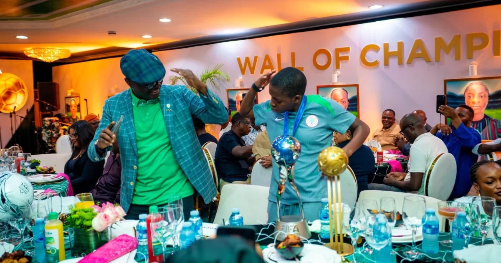

Security & Crime · 16 Nov 2026
Sanwo-Olu gifts Flamingos N10m, iPhones each

Lagos State Governor, Babajide Sanwo-Olu, has rewarded Nigeria’s victorious U-17 women’s national team, the Flamingos, with ₦10 million each, iPhone 17 Pro Max devices and other gifts following their… Read More: https://punchng.com/sanwo-olu-gifts-flamingos-n10m-iphones-each/
Multiple independent publishers are reporting on the same development: Sanwo-Olu gifts Flamingos N10m, iPhones each.
The available reports place the development in the Security & Crime category. The accounts were compared for agreement on the central event rather than simply shared names or broad topics.
One of the available reports describes the development this way: Lagos State Governor, Babajide Sanwo-Olu, has rewarded Nigeria’s victorious U-17 women’s national team, the Flamingos, with ₦10 million each, iPhone 17 Pro Max devices and other gifts following their… Read More: https://punchng.com/sanwo-olu-gifts-flamingos-n10m-iphones-each/
Readers should consult the linked source reports for additional context, updates and details that may change as the story develops.
Sources
This article was produced by the C. O. Eric AI Newsroom from the cited sources. It is published only after automated evidence and safety checks.